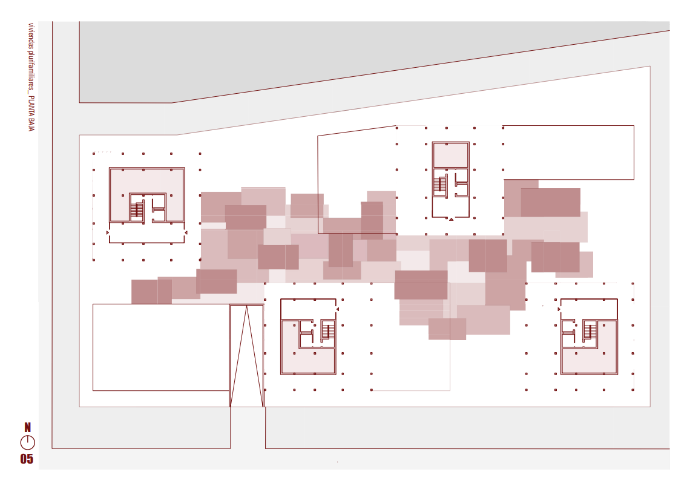
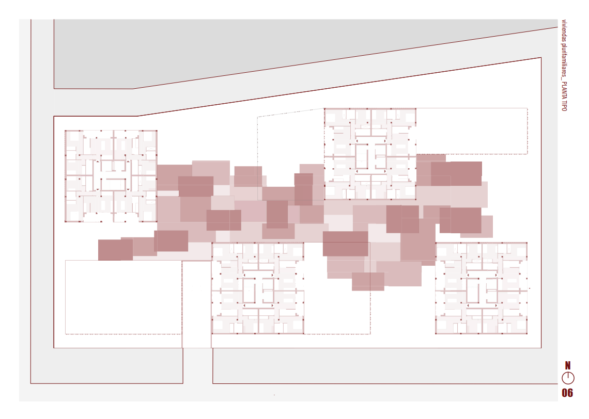
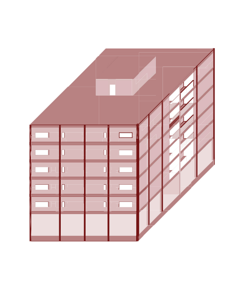
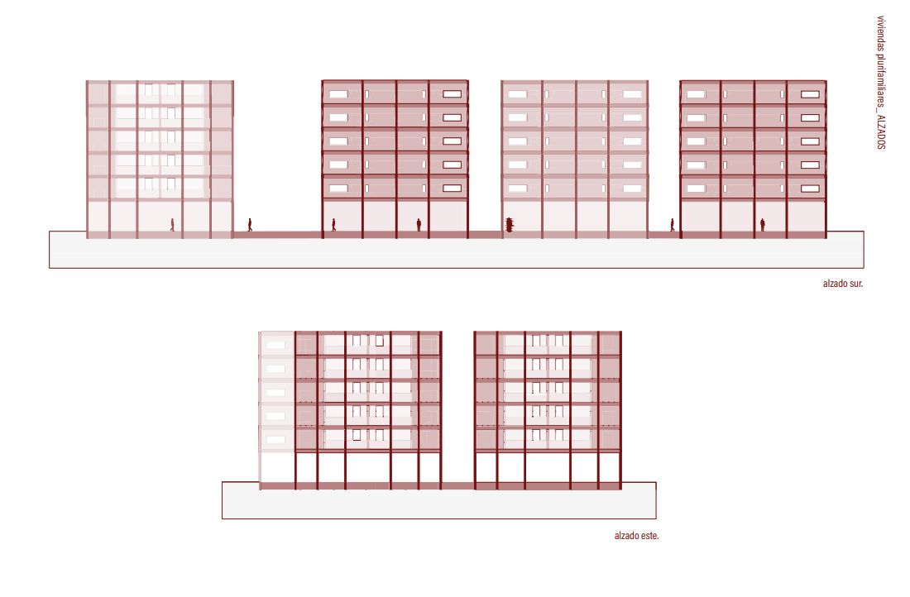
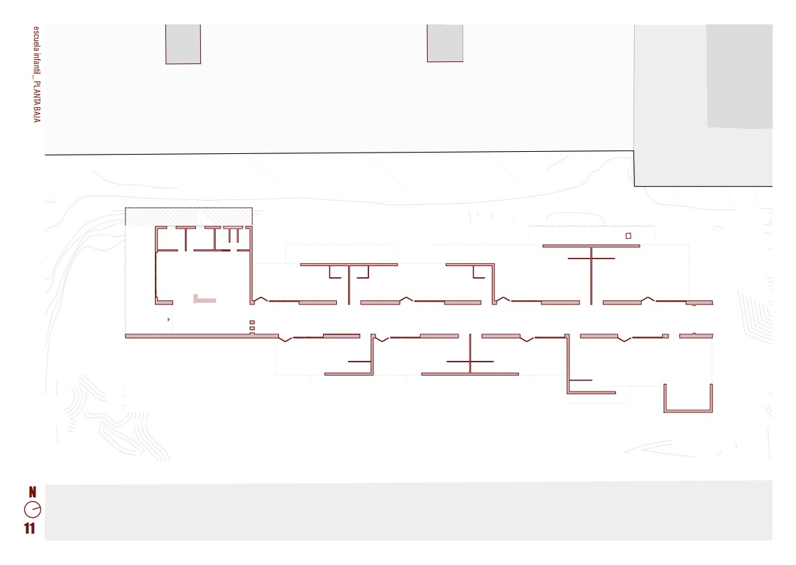
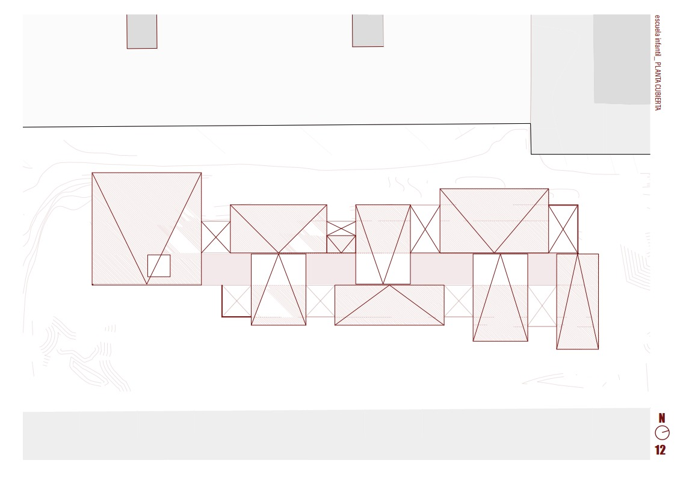
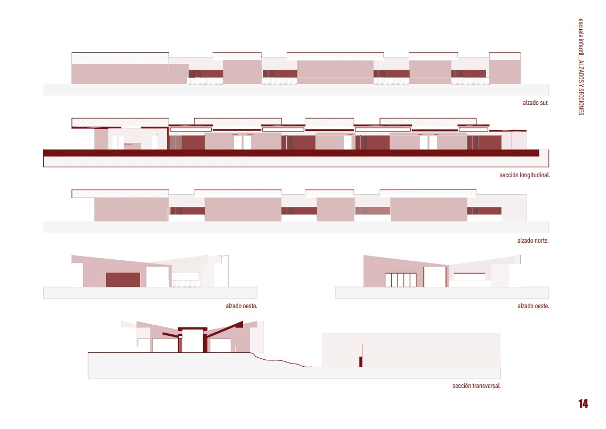

01
Proyecto académico · Sevilla
01 / Proyectos
01
Proyecto académico · Sevilla
02
Proyecto académico · Sevilla
01 / 01
01 / Proyecto
Vivienda colectiva · Sevilla
Cuatro bloques de cinco plantas, organizados para equilibrar densidad, apertura y vida colectiva.
En un entorno urbano que busca equilibrio entre densidad y apertura, cuatro bloques de viviendas se organizan en torno a una idea clara: habitar lo colectivo sin perder lo individual.
Cada edificio, de cinco plantas y con una distribución regular de cuatro viviendas por nivel, establece una presencia firme pero no impositiva. Lo que singulariza al conjunto es el sistema de pérgolas que, a distintas alturas, enlaza los bloques creando recorridos inesperados y espacios intermedios que invitan a la pausa y al encuentro.
Estas conexiones ligeras introducen una segunda escala, más humana, que suaviza la rotundidad de los volúmenes. No se trata solo de una solución funcional o estética, sino de una apuesta por la convivencia: una arquitectura que no impone, sino que sugiere formas de relacionarse. Un gesto simple que convierte el tránsito en experiencia.




02 / Proyecto
Equipamiento educativo · Sevilla
Un edificio que crece con quienes lo habitan, entre cubiertas inclinadas, celosías y patios privados para cada aula.
La arquitectura de esta escuela infantil parte de una premisa esencial: crecer es un proceso gradual, y el espacio debe acompañarlo con sutileza y coherencia. La organización del edificio responde a la lógica del desarrollo infantil, con una clara segregación de los distintos grupos por edad, no como barrera, sino como medida de cuidado y adaptación.
Esta diferenciación se expresa formalmente en un juego de cubiertas inclinadas que, más allá de dotar al conjunto de una identidad reconocible, articula los volúmenes y define alturas y atmósferas acordes a cada etapa. La luz, elemento fundamental en los primeros años, se filtra con precisión a través de muros cortina protegidos por celosías, que resguardan sin aislar, permitiendo una relación controlada con el exterior.
Cada aula se abre a su propio espacio libre, un patio privado que ofrece contacto directo con el aire y el juego, sin perder de vista la seguridad y el control. Así, la arquitectura no impone, sino que acompaña, adaptándose a los ritmos y necesidades de quienes comienzan a descubrir el mundo.


